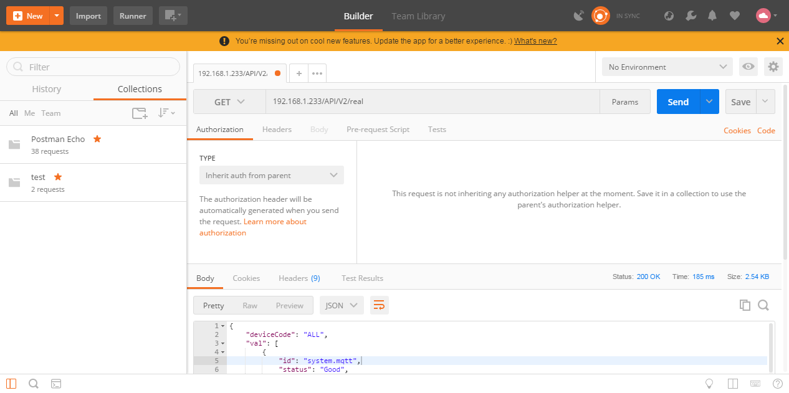
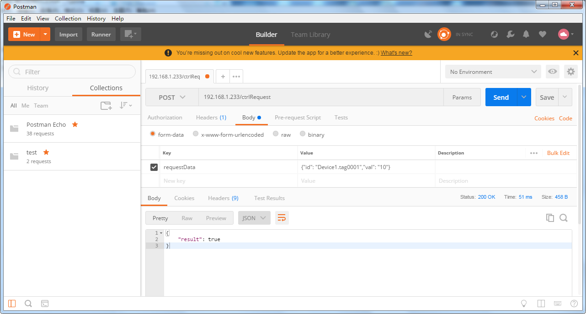

2.5 HTTP接口
网关开放以下HTTP接口，并且给出范例，具体范例在GC安装目录的Web Demo文件夹中。
2.5.1 实时数据
接口功能：
获取此时网关中所有数据点的实时数据
URL（获取实时数据地址）：
http://192.168.1.233/API/V2/real(192.168.1.233为需要查询的网关的ip地址)
HTTP请求方式：
HTTP get
请求参数:
无参数
返回结果格式:
JSON
返回结果字段:
| 返回字段 | 字段类型 | 字段返回值 | 说明 |
|---|---|---|---|
| deviceCode | string | ALL | 指明是所有tag点的实时数据 |
| val | string | 所有tag点的实时数据id | |
| id | string | tag点的唯一标识 | |
| status | string | Good/Error | tag点的数据质量 |
| timestamp | timestamp | 1537007573 | tag点采集的时间戳 |
| val | string | tag点的实时值 |
返回结果示例:
{ "deviceCode": "ALL", "val": [ { "id": "system.mqtt", "status": "Good", "timestamp": 1558312746, "val": "1" }, { "id": "system.TIME_MINUTE", "status": "Good", "timestamp": 1558312800, "val": "40" }, { "id": "system.TIME_WDAY", "status": "Good", "timestamp": 1558312748, "val": "1" }, { "id": "Device1.tag0001", "status": "Error", "timestamp": 1558312858, "val": "0" } ] }
Postman截图：

2.5.2 数据设定
接口功能：
进行单个采集点的写操作
URL（进行写操作地址）：
http://192.168.1.233/ctrlRequest(192.168.0.12为需要进行写操作的网关的ip地址)
HTTP请求方式：
HTTP post，form-data
请求参数:
| 字段名称 | 字段类型 | 必填 | 说明 |
|---|---|---|---|
| id | string | Device1.tag0001 | 指明进行写操作的采集点 |
| val | string | 10 | 需要写入的值 |
返回结果格式:
json
返回结果:
{"result": true}
HTTP通讯成功返回结果都为true，指明网关接收到发送的写操作的数据。
Postman截图：
